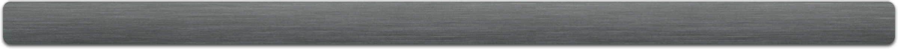

Navbars & Buttons
You can easily customize the look of the navigation buttons or create your very own navbar.
Customizing Buttons
By default the navigation buttons are a simple gray ui with some gradients and shadows added for depth.
All Your Nav Are Belong To Us
The buttons in the boilerplate all "extend" a $default-button configuration which allows you to customize them all at once.
Add the following to your _theme.scss file and you'll see both the navigation buttons and the buttons in the User Nav update to reflect it. You'll notice that we're only setting the background-color but that the buttons still have a gradient. The framework will take the color you specify and perform some calculations in order to get the shading and colors right.
// Default Buttons
$button-styles: (
background-color: #444,
text-shadow: none,
color:#eee,
box-shadow:none
);
Changing Only The Navigation Buttons
Rather than changing all of the buttons at once, you may want to tweak only the nav buttons. In order to do this, simply customize the $nav-button-styles object like so:
// Nav Buttons
$nav-button-styles: (
background-color: $ui-brand-color,
text-shadow: $ui-brand-color,
color:white
);
Adding Rollovers
If you'd like to provide rollover styles, use the following configuration. Note that these are turned off for mobile/touch environments.
$nav-hover-styles:(
color: red
);
Custom Backgrounds (or lack thereof)
Overriding the background property allows you to completely customize the look and feel of the buttons.
Flat Buttons:
$nav-button-styles: (
background: $ui-brand-color,
text-shadow: none,
color:white
);
Text-Only Buttons:
$nav-button-styles: (
background: none,
text-shadow: none,
color:$ui-brand-color
);
Customizing Search
At this point you've probably noticed that modifying the nav buttons also modifies the search field and button. In some instances (like, now) this can have undesirable results. The good news is that we can customize the search input, button and even the menu using some additional properties:
// Restore the border
$search-input-styles: (
border:1px solid rgba(0,0,0,0.2),
border-right: none
);
// Give the button back it's background
$search-button-styles: (
color: white,
background:$ui-brand-color
);
Creating A Navigation Bar
An alternative to individual buttons is using a background to create a nav bar. This can be achieved by adding a background to the $nav-styles object.
Before we get to the code, let's go back and change a few things based on what we've learned. See if you can remember how to change the following:
- Remove the
logo-position - Remove the
logo-offset
Once those are done, go ahead and add this code which will create our nav bar:
$nav-styles:(
background: linear-gradient( to bottom, #646464, #444 ),
padding: 8px,
border-radius: 4px
);
Now that our nav is bumping up against the crumb navigation, let's bump up the header height a little:
$header-styles:(
height:140px
);
Using an Image for the Nav Bar
It's possible to use an image for the nav bar, but requires some special considerations. In order allow the nav bar to scale, one image is essentially "sliced" into three parts: left, center and right. Download the following image to your output/images/ folder to test it out:
| Navbar: |
|---|
|  |
First, let's set the height and width of our navbar. You'll notice that we're using a slightly larger width, in which case the navbar will center horizontally:
$nav-styles:(
height: 66px,
width: 980px
);
Now we'll use the navbar-image and navbar-cap-width settings to implement the navbar image we downloaded:
$nav-settings: (
navbar-image: url(images/acme_navbar.png),
navbar-cap-width: 30px
);
In order to make things look better visually, we'll add padding-top to the nav-menu in order to move the buttons down a bit:
$nav-menu-styles:(
padding-top:18px
);
Finally, we'll bump up the header height to make sure the crumb navigation is placed below our new navbar:
$header-styles: (
height: 140px
);